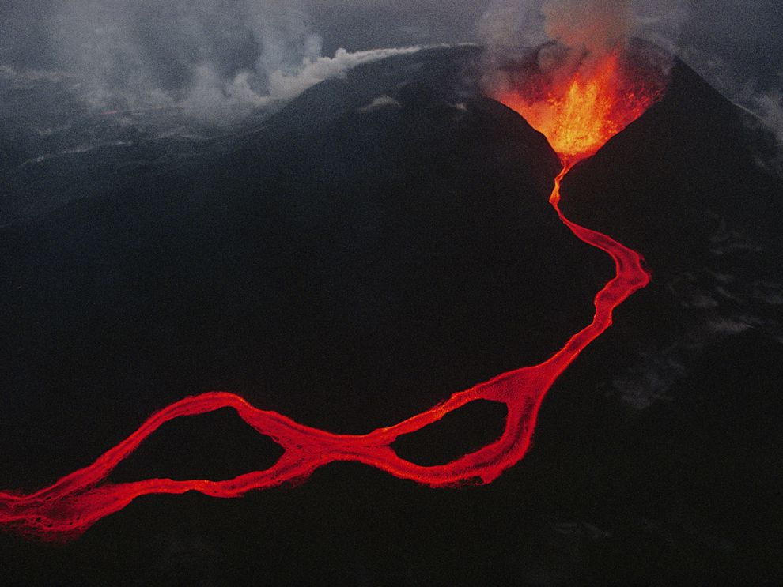
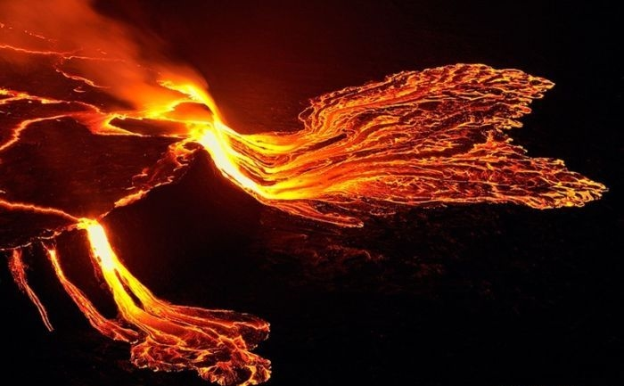
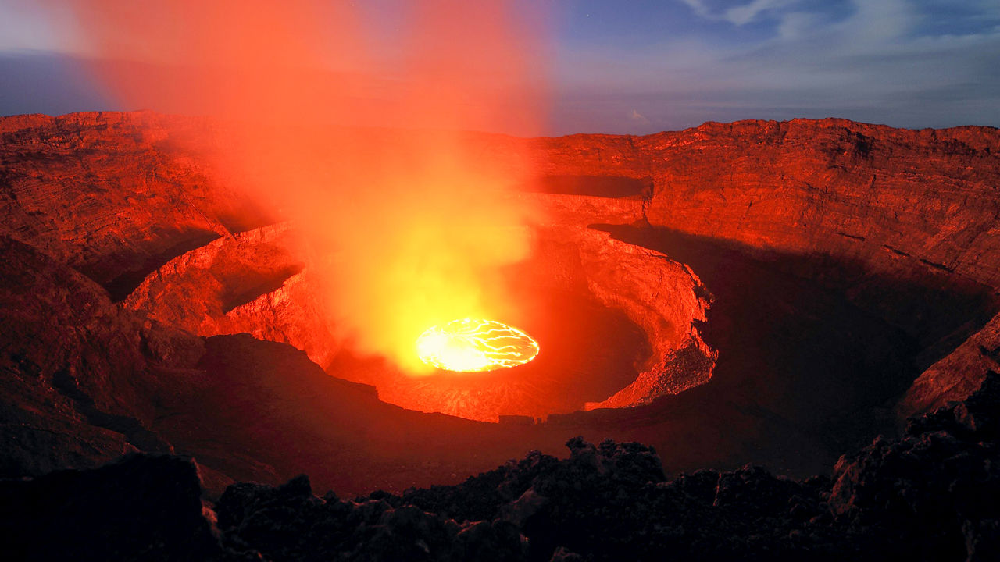

If there is anything you would like to ask, reach out!
This is how you can reach out to me!
Also, Bonus Content!
Here is some info about the world's largest lava lake! (because I'm extremely fascinated and in love with molten rocks)
  Lava lakes are large volumes of molten lava, usually basaltic, contained in a volcanic vent, crater, or broad depression. The term is used to describe both lava lakes that are wholly or partly molten and those that are solidified
Located near the eastern border of the Democratic Republic of the Congo,Mount Nyiragongo is an active one located inside Virunga National Park, in the Democratic Republic of the Congo. Nyiragongo’s lava lake has at times been the most voluminous known lava lake in recent history
It is one of the most active volcanoes in the world, erupting on average every 30 year
Since 1882, it has erupted at least 34 times, including many periods where activity was continuous for years at a time, often in the form of a churning lava lake in the crater.
The volcanic activity at this mountain is still going on but it is happening only in the crater.
In 1977, a deadly eruption occurred when scientists measured lava travelling at a speed of 60 miles per hour.
Hiking up this mountain is not difficult and reaching the top requires approximately 4-5 hours.
The volcano is monitored by a team of scientists at the Goma Volcanic Observatory (GVO). It is continuously monitored, with seismic data produced every four minutes and temperature data produced every ten minutes.[20] Continued funding for the GVO is in doubt, as the World Bank decided in 2020 to terminate its contributions.
Unfortunately, political unrest prevents the scientific community from studying the dangerous volcano in depth.